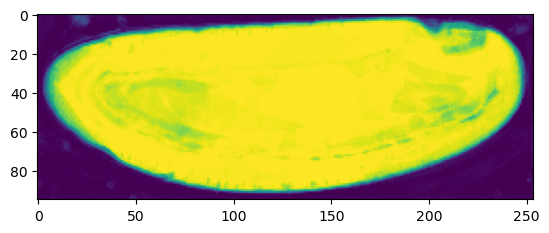
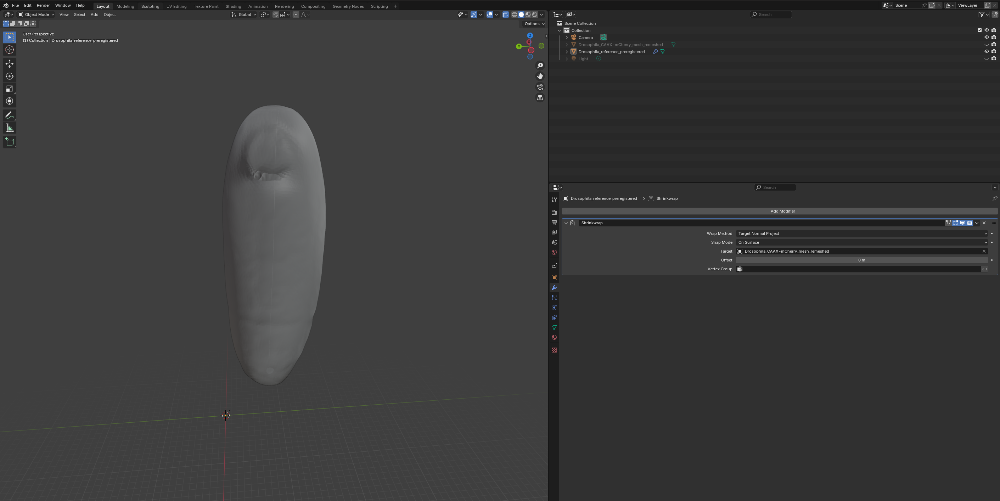

8. Consistent cartographic projections across multiple recordings
In previous tutorials, we saw how to do tissue cartography with a single volumetric image. But often, we have multiple images of very similarly shaped objects - either the successive frames of a movie or multiple recordings of biological structures with very consistent shapes, like the Drosophila egg. We want to use “the same” UV map/cartographic projection for all of the images - both so that we don’t need to redo the work of creating the UV map, and so that positions in our cartographic projections always correspond to the same anatomical position on the imaged object.
To do this, we use mesh to mesh mapping. The idea is that we have a reference mesh - for example, from the first frame of a movie - on which a UV map is defined. We then move and deform this mesh so that it fits our target mesh - which describes the surface we want to extract from the volumetric data, for example in subsequent frames - as well as possible. The deformed reference mesh now fits the volumetric data but still carries the UV map, and can now be used to create a cartographic projection.
If you have a consistently shaped object that you know you will image many times - in the Streichan lab, the early Drosophila embryo, of which we have hundreds of in toto recordings - it might make sense to make an idealized “prototypical” mesh with a nice mesh and UV map that you can use as a reference.
Mesh to mesh mapping is a well-studied problem and we can make use of many robust and already-implemented algorithms. We proceed in two steps:
Registration: Align reference mesh to target mesh using translations, rotations, and rescaling
Shrink-wrapping: Move each point on the registered reference mesh to the closest point on the surface defined by the target mesh.
Here is an illustration - the green reference mesh is first registered to the orange target mesh:
image.png
Next, the shrink-wrapping operation deforms the reference mesh to snuggly fit the target mesh:
image.png
For step 1, we provide a Python module and a button in the Blender add-on. We could also use the pymeshlab GUI. For step 2, we will use the shrinkwrap modifier in blender. In tutorial 9, we will see how to carry out shrinkwrapping automatically from within python.
We will explain the process using the dataset in nbs/Tutorials/wrapping_example.
This approach works if the reference mesh and the target mesh are roughly of similar shape. If this is no longer the case - for example in a movie where the surface of interest undergoes drastic deformations - more sophisticated approaches are required. These are described in full generality in tutorial 10.
from blender_tissue_cartography import io as tciofrom blender_tissue_cartography import mesh as tcmeshfrom blender_tissue_cartography import remesh as tcremeshfrom blender_tissue_cartography import interpolation as tcinterpfrom blender_tissue_cartography import registration as tcregfrom blender_tissue_cartography import wrapping as tcwrap
The history saving thread hit an unexpected error (OperationalError('attempt to write a readonly database')).History will not be written to the database.
import numpy as npfrom skimage import transformfrom scipy import stats, spatial, linalgimport osimport matplotlib.pyplot as plt
# this module will not be available on new ARM apple computersimport pymeshlabfrom blender_tissue_cartography import remesh_pymeshlab as tcremesh_pymeshlab
Warning:
Unable to load the following plugins:
libio_e57.so: libio_e57.so does not seem to be a Qt Plugin.
Cannot load library /home/nikolas/Programs/miniconda3/envs/blender-tissue-cartography/lib/python3.11/site-packages/pymeshlab/lib/plugins/libio_e57.so: (/lib/x86_64-linux-gnu/libp11-kit.so.0: undefined symbol: ffi_type_pointer, version LIBFFI_BASE_7.0)
np.set_printoptions(suppress=True)
Pre-processing
Loading and segmenting the dataset
We will use the same dataset - a Drosophila example - as in tutorial 5.
metadata_dict = {'filename': 'wrapping_example/Drosophila_CAAX-mCherry','resolution_in_microns': (1.05, 1.05, 1.05), # lightsheet data has isotropic resolution'subsampling_factors': (1/2, 1/2, 1/2), }
image = tcio.adjust_axis_order(tcio.imread(f"{metadata_dict['filename']}.tif"))print("image shape:", image.shape) # image shape - spatial axes are in z-x-y order
Now create a 3d segmentation, in this case using ilatik. We use ilastik binary pixel classification. We could post-process the ilastik output here, for example using morphsnakes. We then load the segmentation back into the jupyter notebook.
The bright dots outside the embryo are fluorescent beads necessary for sample registration in light-sheet microscopy. You can ignore them.
Attention: when importing the .h5 into ilastik, make sure the dimension order is correct! In this case, czyx for both export and import.
# we now save the subsampled image a .h5 file for input into ilastik for segmentationtcio.write_h5(f"{metadata_dict['filename']}_subsampled.h5", subsampled_image)
# after creating an ilastik project, training the model, and exporting the probabilities, we load the segmentationsegmentation = tcio.read_h5(f"{metadata_dict['filename']}_subsampled-image_Probabilities.h5")segmentation = segmentation[0] # select the first channel of the segmentation - it's the probablity a pixel# is part of the sampleprint("segmentation shape:", segmentation.shape)
segmentation shape: (95, 254, 94)
# look at the segmentation in a cross sectionplt.imshow(segmentation[:,:,50], vmin=0, vmax=1)

Meshing
We convert the segmentation into a triangular mesh using the marching cubes method and save the mesh as a wavefront .obj file.
Important convention For sanity’s sake, we will always store all mesh coordinates in microns. This means rescaling appropriately after calculating the mesh from the 3d segmentation.
# now we create a 3d mesh of using the marching cubes methodvertices, faces = tcremesh.marching_cubes(segmentation, isovalue=0.5, sigma_smoothing=3)# EXTREMELY IMPORTANT - we now rescale the vertex coordinates so that they are in microns.vertices_in_microns = vertices * (np.array(metadata_dict['resolution_in_microns'])/np.array(metadata_dict['subsampling_factors']))
# improve mesh quality using meshlab - optionalmesh_remeshed = tcremesh_pymeshlab.remesh_pymeshlab(mesh)mesh_remeshed.write_obj(f"{metadata_dict['filename']}_mesh_remeshed.obj")
mesh_remeshed.vertices.shape, mesh.vertices.shape
((8434, 3), (81322, 3))
Registration
Using the blender_tissue_cartography Python library
In the data folder, we have the mesh we just created, Drosophila_CAAX-mCherry_mesh_remeshed.obj, as well as out reference meshDrosophila_reference.obj - an idealized Drosophila embryo with a standardized UV mapping, corresponding to a cylindrical projection. You can look at both meshes in the blender file Drosophila_CAAX-mCherry.blend.
We now register the reference mesh, i.e. bring it into approximate alignment with the data mesh. This is done in two steps (using a first, coarse alignment, and refining it using the Iterative Closest Point algorithm).
# apply the computed transformation and save the resultmesh_registered = mesh_ref.apply_affine_to_mesh(trafo_icp)mesh_registered.name ="Drosophila_reference_preregistered"mesh_registered.write_obj(f"wrapping_example/Drosophila_reference_registered.obj")
Using the blender_tissue_cartography add-on
You can also carry out the registration directly in Blender, using the add-on version of blender_tissue_cartography:
image.png
See tutorial 3.
Using MeshLab
You can also perform registration graphically in MeshLab - see this tutorial: https://www.youtube.com/watch?v=30bJcj6yA4c. Use this if you have problems with the automated method above.
Wrapping
Using Blender
Now that we have registered the mesh, we can wrap it! Let’s first do it using blender with the shrinkwrap modifier. Go to the “layout” tab and click the “blue wrench” on the right to add a modifier. Search for shrinkwrap, select the target, and use “Tangent Normal Project” for best results:

image.png
If things look good, click “Apply” to make the modifier permanent and export the mesh as Drosophila_reference_wrapped.obj.
Automated wrapping using the Python library
We can also carry out the shrink-wrapping operation in Python, optionally smoothing the mesh after to remove “creases”.
This may be a good point to note that if you have any problems with multilayer projections, your normals may be messed up. Some advice on how to visualize and if necessary, recalculate mesh normals.
Useful tools: “Recalculate normals” (under “Mesh” in “Edit Mode”), and the modifier “Normals -> Weighted Normal” (smoothes normals) and “Deform -> Smooth”.
Let’s visualize our mesh normals on top of our image data.
plt.scatter(*slice_vertices.T, s=5, c="tab:red")plt.quiver(*slice_vertices.T, *slice_normals.T, color="tab:red")plt.imshow(slice_image[0], vmax=10000, origin="lower") # normal vectors are pointing "out"
UV projection
To see how well all of this has worked, let’s use the wrapped mesh to generate UV projections. We will compare it with the automatic sphere unwrap on the original data mesh.
normal_offsets = np.array([-4, -2, 0, 2])metadata_dict["normal_offsets"] = normal_offsets # add the info to the metadatauv_grid_steps =512
Warning: readOBJ() ignored non-comment line 4:
o Drosophila_CAAX-mCherry_mesh_remeshed
/home/nikolas/Documents/UCSB/streichan/numerics/code/python_code/jupyter_notebooks/blender-tissue-cartography/blender_tissue_cartography/interpolation.py:217: RuntimeWarning: UV map has self-intersections, 8 flipped triangles. Try use_fallback=True?
warnings.warn("UV map has self-intersections, {} flipped triangles. Try use_fallback=True?".format(
# show the projected datafig, (ax1, ax2) = plt.subplots(figsize=(8,8), ncols=2)ax1.imshow(projected_data_wrapped[0, 0], vmax=10000)ax2.imshow(projected_data[0, 0][::-1,::-1].T, vmax=10000)
# save images for visualization in blendertexture_path =f"{os.getcwd()}/{metadata_dict['filename']}_textures"tcio.save_stack_for_blender(projected_data_wrapped, texture_path, normalization=(0.01, 0.99))
# save images as .tif stack for analysistcio.save_for_imageJ(f"{metadata_dict['filename']}_projected.tif", projected_data_wrapped, z_axis=1)tcio.save_for_imageJ(f"{metadata_dict['filename']}_3d_coordinates.tif", projected_coordinates_wrapped)tcio.save_for_imageJ(f"{metadata_dict['filename']}_normals.tif", projected_normals_wrapped)
Let’s add a shader to check the texture looks good: